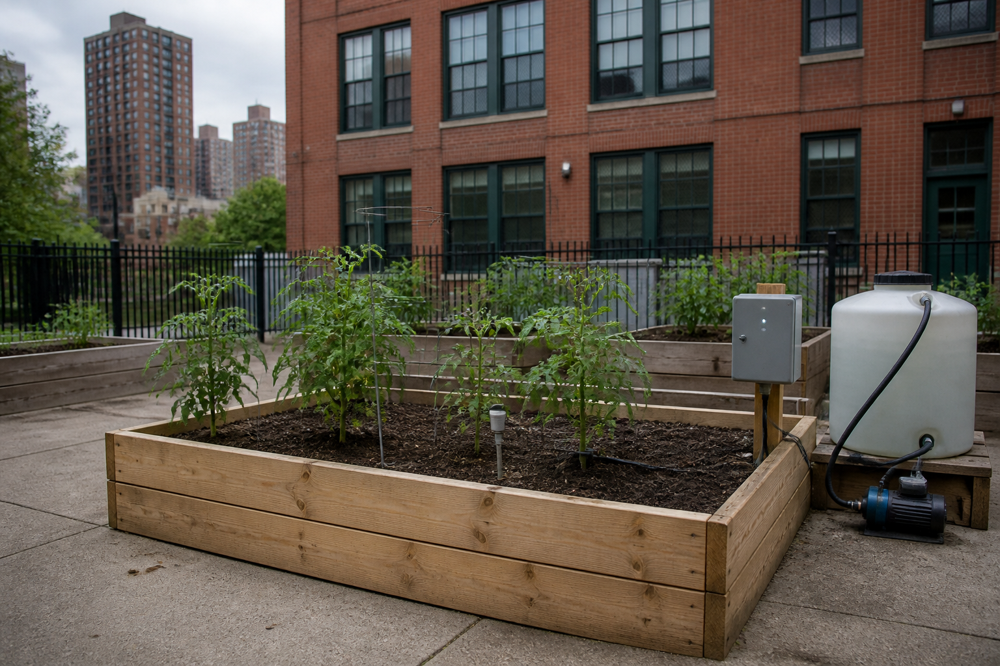

Écrire le programme qui décide d'arroser, puis le mettre au point.
Comment écrire un programme qui décide tout seul, et savoir qu'il décide juste ?

if.
🧪 4. Comment prouver que le programme décide juste ?
L'attendu d'abord, puis l'essai pile au seuil.
🔁 5. Un programme juste peut-il être inutilisable ?
Oui : sans bug, c'est la règle qui est mal choisie.
🎚️ 6. Comment deux seuils calment-ils la pompe ?
Un seuil allume, l'autre éteint ; entre eux, rien.
💡 7. Cette solution sert-elle ailleurs ?
Oui : le squelette reste, les valeurs changent.
Au jardin, l'algorigramme de l'arrosage se lit de haut en bas :
🧠 À retenir : un algorigramme dessine le programme avant de l'écrire. Le losange pose une question et a toujours deux sorties ; la flèche qui remonte est la boucle.
⚠️ Le piège : compter le losange parmi les actions. Il ne fait rien : il pose une question.
La règle de départ ne regardait que l'humidité. Nouvelle exigence : n'arroser qu'entre 6 h et 10 h.
SI H < SEUIL ALORSSI H < SEUILET heure >= 6ET heure <= 10 ALORS🧠 À retenir : modifier, c'est trouver le bon endroit et n'intervenir que là. « Entre 6 et 10 » s'écrit avec deux comparaisons reliées par ET : les deux doivent être vraies.
⚠️ Le piège : ne retester que l'ajout. Tu rejoues tout le jeu d'essais : c'est la non-régression.
Dans Vittascience, tu construis la décision en blocs, et le même programme s'écrit en Python :
SEUIL = 40 : un seul endroit à changer.H = 25, heure = 8. Au jardin : le capteur et l'horloge.if … : remplace le losange. Les lignes décalées en dépendent.print("POMPE ON") joue la pompe. Au jardin : l'ordre au relais.🧠 À retenir : traduire, c'est retrouver chaque forme de l'algorigramme dans le
code : le losange devient if. Le signe = range une valeur, le signe == compare.
⚠️ Le piège : oublier le décalage sous if. Une ligne non décalée s'exécute toujours.
Le seuil est à 40 %. Quatre familles d'essais, chacune avec son résultat attendu :
🧠 À retenir : tester, c'est écrire le résultat attendu avant d'exécuter, puis comparer. L'essai pile au seuil est le seul qui sépare < de <=.
⚠️ Le piège : croire qu'une valeur absurde fait planter le programme. Elle passe sans bruit.
Près d'un plant, l'humidité tremble entre 39 et 41. La pompe suit chaque tremblement : elle s'affole.
🧠 À retenir : un programme peut être juste et inutilisable : c'est la règle qui est mal choisie. Après la correction, tu re-testes dans les mêmes conditions.
⚠️ Le piège : chercher un bug dans le code. Il n'y en a pas, et pourtant le relais s'use à chaque claquement.
Le chronogramme de la séquence traite la même mesure d'humidité de deux façons :
SI H < 35 : allumer.SINON SI H > 45 : éteindre.🧠 À retenir : l'hystérésis, ce sont deux seuils, un pour allumer et un pour éteindre. Entre les deux, dans la bande morte, la pompe garde son état : le programme a besoin d'une mémoire.
⚠️ Le piège : écrire « SINON éteindre » à la place du cas vide. La bande morte disparaît, et la pompe s'affole de nouveau.
Au crépuscule, le lampadaire de la cour clignoterait aussi. Le même squelette le calme :
🧠 À retenir : une structure de programme se réemploie d'un objet à l'autre. La largeur de la bande morte se choisit d'après la façon dont la mesure varie en vrai.
⚠️ Le piège : choisir deux seuils très proches « pour être précis ». La bande est trop étroite, et l'objet s'affole de nouveau.